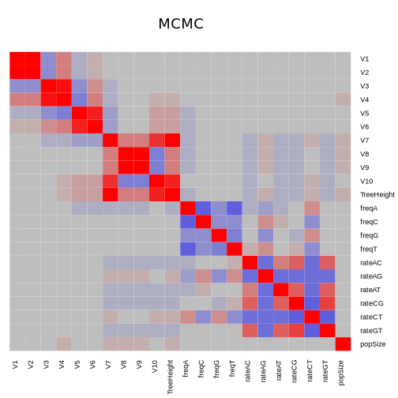

Phylogenetics using Variational Inference
Mathieu Fourment
ithree institute
University of Technology Sydney
University of Technology Sydney
Approximating Distributions in Phylogenetics
- Usually approximate posterior with MCMC and propose parameters one by one
- Approximate distribution of one branch length using a parametric distribution (Aberer et al. 2016)
- Approximate distribution of one branch length using specialised surrogate function (Claywell et al. 2017)
- Adaptive MCMC to jointly propose parameters (Baele et al. 2017)
Approximating the distribution of one branch length
- Fitting parametric distribution
- Goal is to improve sampling the tree space using an independence sampler

Aberer, Stamatakis, Ronquist. Syst Biol 2016
Approximating the distribution of a branch length
- Fitting a simpler distribution:
- $$ f(c, m, r, b; t) = c \log \left ( \frac{1 + e^{(r(t + b))^{-1}}}{2} \right ) + m \log \left(\frac{1 - e^{(r(t + b))^{-1}}}{2} \right) $$
- Parameters: c (# constant sites), m (# mutated sites), r (rate), b (truncation)
- Nonlinear least-squares optimization
- Sampling from surrogate function using rejection sampling
- Improved the efficiency of SMC sampler (see poster)
Claywell, Dinh, Fourment, McCoy, Matsen. MBE 2017
Fourment, Claywell, Dinh, McCoy, Matsen, Darling. Syst Biol 2017
Variational inference
Minimize the Kullback Leibler divergence from variational distribution $q$ to posterior distribution $p$
$$ \boldsymbol{\phi}^* = \operatorname*{arg\,min}_{\boldsymbol{\phi} \in \boldsymbol{\Phi}} \operatorname{KL}(q(\boldsymbol{\theta}; \boldsymbol{\phi}) \parallel p(\boldsymbol{\theta} \mid \mathbf{x})) $$Review: Blei, Kucukelbir, McAuliffe 2016
Evidence lower bound (ELBO)
\[ \begin{aligned} \operatorname{KL}(q(\boldsymbol{\theta}; \boldsymbol{\phi}) \parallel p(\boldsymbol{\theta} \mid \mathbf{x})) & = \mathop{\mathbb{E}}[\log q(\boldsymbol{\theta})] - \mathop{\mathbb{E}}[\log p(\boldsymbol{\theta} \mid \mathbf{x})] \\ & = \mathop{\mathbb{E}}[\log q(\boldsymbol{\theta})] - \mathop{\mathbb{E}}[\log p(\boldsymbol{\theta}, \mathbf{x})] + \log p(\mathbf{x}) \end{aligned}\]$p(\mathbf{x})$ constant with respect to $q(\boldsymbol{\theta})$
Instead of minimizing KL divergence, maximize evidence lower bound:
$$ \textrm{ELBO}(q) = \mathop{\mathbb{E}}_{q(\boldsymbol{\theta}; \boldsymbol{\phi})}[\log p(\mathbf{x}, \boldsymbol{\theta}) - \log q(\boldsymbol{\theta}; \boldsymbol{\phi})]$$ELBO(q) is the lower bound of evidence:
$$\log p(\mathbf{x}) \geq \textrm{ELBO}(q)$$Variational distributions
Mean-field Gaussian:
$$ q(\boldsymbol{\theta}; \boldsymbol{\phi}) = \mathcal{N}(\boldsymbol{\theta}; \boldsymbol{\mu}, diag(\boldsymbol{\sigma}^2)) = \prod_{i=1}^n \mathcal{N}(\theta_i; \mu_i, \sigma_i^2) $$Full-rank Gaussian:
$$ q(\boldsymbol{\theta}; \boldsymbol{\phi}) = \mathcal{N}(\boldsymbol{\theta}; \boldsymbol{\mu}, \boldsymbol{\Sigma}) $$Algorithm
- Stochastic gradient ascent to optimize the ELBO
- Requires calculating gradient of probability models
- Transformation of constrained variables (e.g. branch length lives in $\mathbb{R}^+$)
Variational inference software
Require calculating derivatives (automatic differentiation)- Stan (HMC, MCMC)
- Edward, BayesPi, PyMC3, Pyro (Uber) ...
Simple Stan model
Simulation study
- Random coalescent tree with 6 taxa
- Simulate alignment with GTR
- Every ranked labelled tree was enumerated (2700 topologies)
- Analyse with BEAST and Stan

Estimates using true tree

Marginal likelihood vs. ELBO
- Marginal likelihood calculated using path sampling
- Stochastic gradient ascent trapped in local maxima
Marginal likelihood vs. ELBO
- Rerun Stan several times and chose the highest ELBO
- Slope: 0.99 Intercept: -11.9
Parameter correlation from MCMC output
- Heatmap representing correlation matrix (Red=positive, blue: negative correlation )
- Strong correlation between some parameters (e.g. adjacent branches)
- Mean-field variational model ignores correlation between model parameters

Correlation in a larger tree

Parameter correlation with variational model
Problems and ideas
- Short branches are difficult to approximate. Problem also encountered in surrogate and parametric approximations of a single branch
- Reducing the number parameters
- Setting covariances to 0: we should expect low or no correlation between branches that are far apart
Summary
- Testing sparse covariance matrix for full-rank model
- Not possible in Stan, working on a specialised phylogenetic variational program
- Combining multiple trees
- Investigate other divergence measures (lower and upper bound of marginal likelihood)
Acknowledgements
- Aaron Darling, University of Technology Sydney
- Erick Matsen, Fred Hutchinson Cancer Research
- The following organizations: